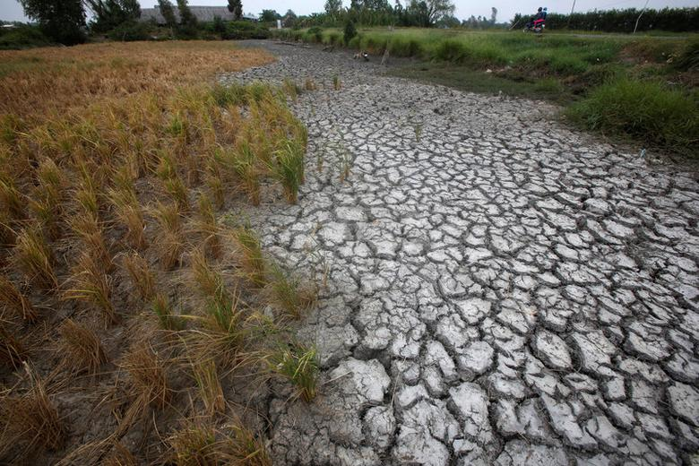

.jpg)
Warmer weather, more desertification, rising of the sea level. These are just few of the effects of Climate change. There are lots of causes of climate change. It could be solar flares and other phenomenon in the outer space. It could also be caused by axial tilt of the earth. Other causes of climate change are natural phenomena like volcanic eruption or typhoon. But the most pointed out reason for climate change is human activity. Greenhouse emission causes increase to earth’s atmospheric temperature which causes global warning. This global warming came from many causes and end up with worst effects. Like, global warming can be caused by deforestation which will end up to faster vaporization of waters from oceans, which will form big strong typhoons which will also destroy trees the natural way.
The destruction made by global warming is making a domino effect in the environment and biodiversity. This don’t just affect wild but also people. Agriculture, production, and health can be affected by climate change and global warming. This can be indirect but still affect our society.

Climate change is not the only problem we are facing but also energy crisis. Energy crisis is experienced because of having less access to energy producing materials or experiencing high cost of raw material for energy production. There are ways presented to produce energy, both renewable and not.
At the end, being aware of the environment and how to conserve it really matters. We are part of the biodiversity and so we must contribute to the uplift of it. Progress is not bad if it won’t destroy us and our environment. We must be anchored by the fact that all of these are made for our goodness and necessity, and not just for earning and being wealthy. Ashes to ashes we go, and nothing will be taken. That is why we should care about the environment as we care about the future of our kids.